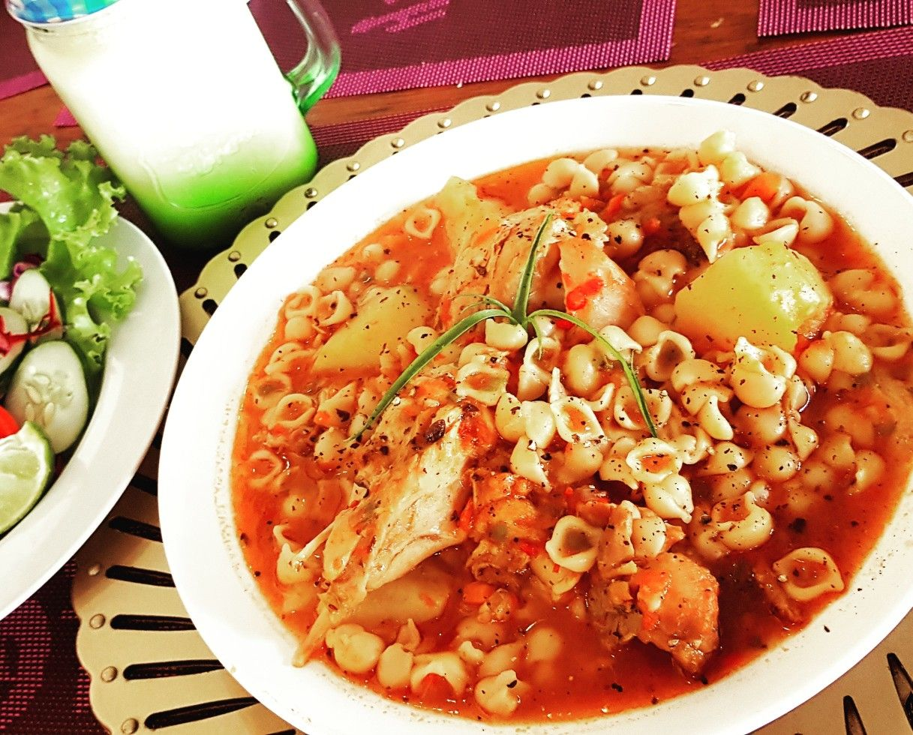

Estofado de Pollo con Fideos

Descripción:
Vamos a hacer una receta ideal para los dias de frio: un suculento estofado de pollo acompañado con nuestros fideos
preferidos. Como todos los estofados, guisos y salsas, este plato tiene tanta versatilidad y variaciones a la receta
como la cantidad de casas en las que se prepara. Ademas nos permite hacerlo con o sin fideos, acompañarlo con arroz
o comerlo solo. En este caso nos decidimos a hacerlo con fideos incluidos en la cocción, sin embargo podemos hacer
nuestro estofado solito y por separado cocinar el acompañamiento que deseemos.
Ingredientes:
- 8 patas de pollo o 2-3 supremas cortadas en cubos
- 1 cebolla grande o 2 chicas
- medio morrón rojo y medio morrón verde
- 1/2 Kg de papas cortadas en cubos medianos
- 1 caja de puré de tomate
- 1 zanahoria grande
- 1 cucharada de aceite vegetal
- agua en cantidad necesaria
- condimentos a gusto: sal, pimenton, aji molido, orégano y pimienta negra
- 1/2 bolsa de fideos (en mi caso voy a elegir coditos)
Pasos:
- Picar fino los morrones y la cebolla, y rallar la zanahoria.
- En una olla suficientemente grande colocar el aceite y empezar a sofreír los vegetales cortados a temperatura media.
Agregar los condimentos a excepción de la sal y el orégano
- Agregar el pollo y un poco de sal para que comience a tomar gusto. Cocinar hasta que la carne se vuelva blanca.
Agregar el pure de tomate y subir el fuego al máximo.
- Agregar las papas y agua hasta que queden cubiertas. Cuando rompa el hervor bajar el fuego al mínimo para evitar que
se peguen los ingredientes al fondo y se quemen.
- Una vez que las papas estan casi cocidas (comprobar el estado pinchandolas suavemente con un tenedor) se agregan los
fideos y se deja cocinar.
- Agregar el orégano y sal a gusto.
Dato! Luego de bajar el fuego al minimo trataremos de evitar revolver el estofado de forma de que nuestras papas no se desarmen.
Volver al Inicio